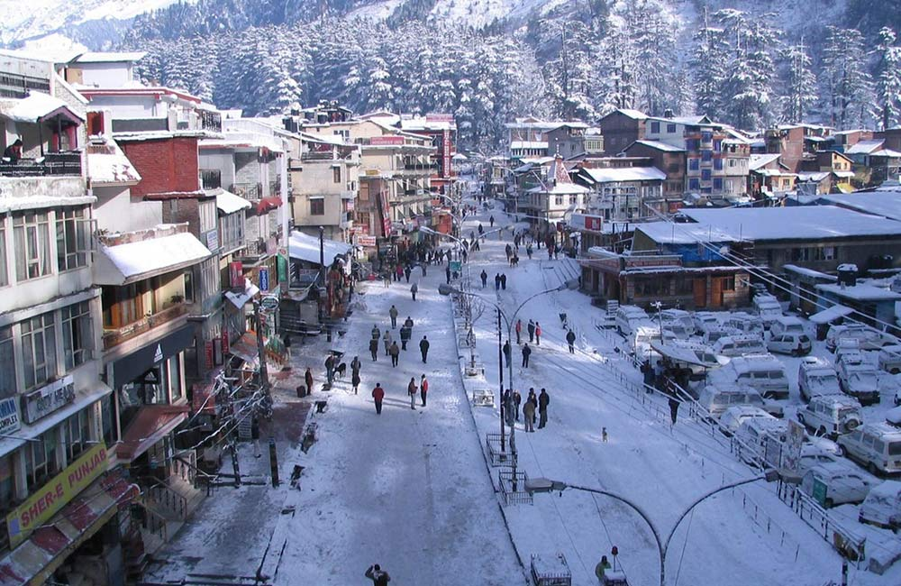

Manali

Situated in the Kullu Valley of Himachal Pradesh, Manali draws tourists with its natural beauty and tranquillity.
The hill station is frequented by travellers from across the country, especially during the summer season when cities reel under the scorching heat.
Snow-capped mountains, dense forests, riverine valleys and sparkling streams add to the beauty of the hill station and make it one of the most popular holiday destinations in India.
Another charming thing about Manali is that it showcases a beautiful blend of rich cultural heritage and modernisation.
Besides spending time in serenity and soaking in the beauty of the surroundings, you can engage in thrilling adventure activities here for a memorable vacation.
Best Time to Visit: October to June
Ideal Duration: 3-4 days
Places to Visit in Manali: Manu Temple, Hidimba Devi Temple, Museum of Himachal Culture and Folk Art, Jogini Falls,
Himalayan Nyinmapa Tibetan Buddhist Temple, Nehru Kund, Mall Road
Things to Do in Manali: Paragliding, parachuting and horse riding at Solang Valley, mountain biking, skiing and sledge riding at Rohtang Pass,
trekking, river rafting, ziplining, zorbing
How to Reach
Nearest Airport: Bhuntar Airport
Nearest Train Station: Joginder Nagar Railway Station